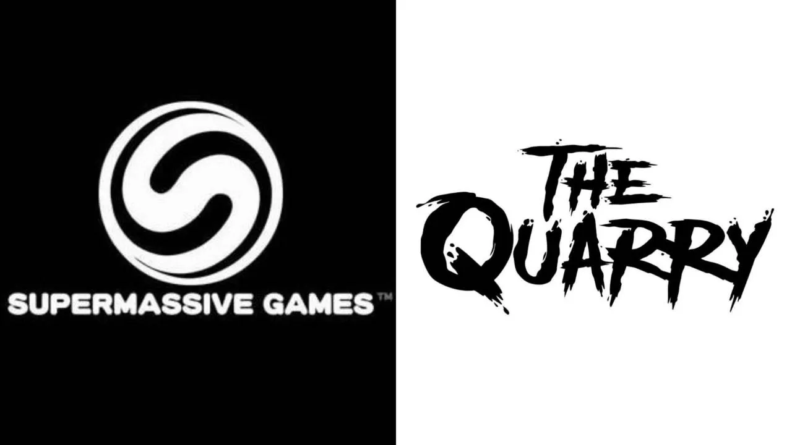
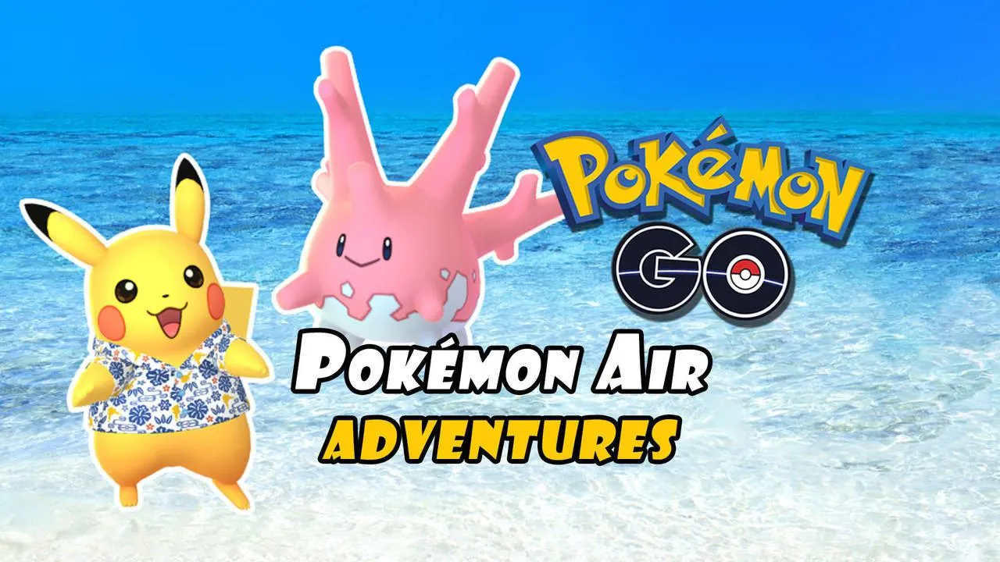
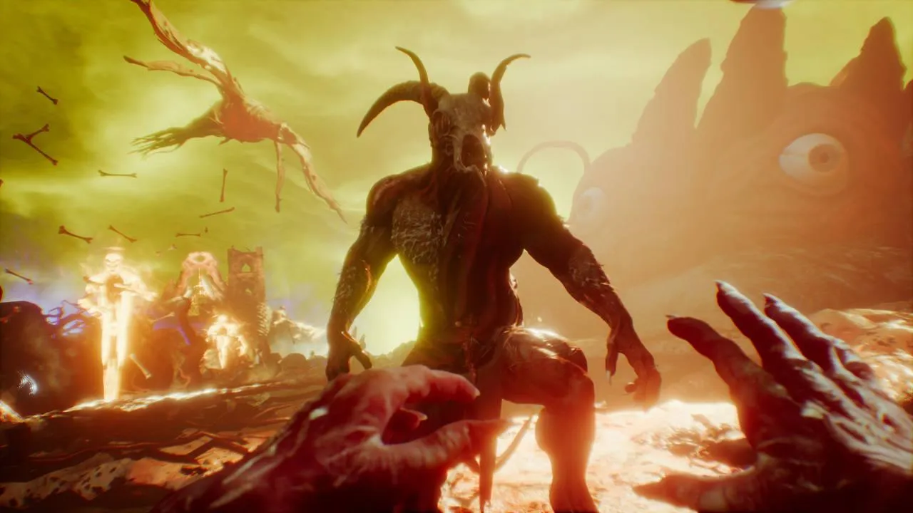

Nintendo Direct: ¿Veremos hoy Hollow Knight: Silksong?
SPOILER: NO

Los creadores de Until Dawn trabajan en un juego fuera de la saga Dark Pictures
El estudio británico Supermassive Games ha registrado el logo y la marca de 'The Quarry', una propiedad intelectual que planean utilizar para un nuevo videojuego.

Pokémon GO fija la fecha para su evento global Pokémon Air Adventures 2022
El evento de colaboración Pokémon Air Adventures en Pokémon GO por fin tiene fecha; dará inicio el próximo mes de mayo con Pokémon especiales como Pikachu con camisa kariyushi o Corsola variocolor.

La versión sin censura de Agony desaparece de las bibliotecas de Steam
Agony Unrated, la edición que no pasó el filtro de los organismos de calificación por edades, ha desaparecido de la lista de juegos en propiedad de los usuarios.